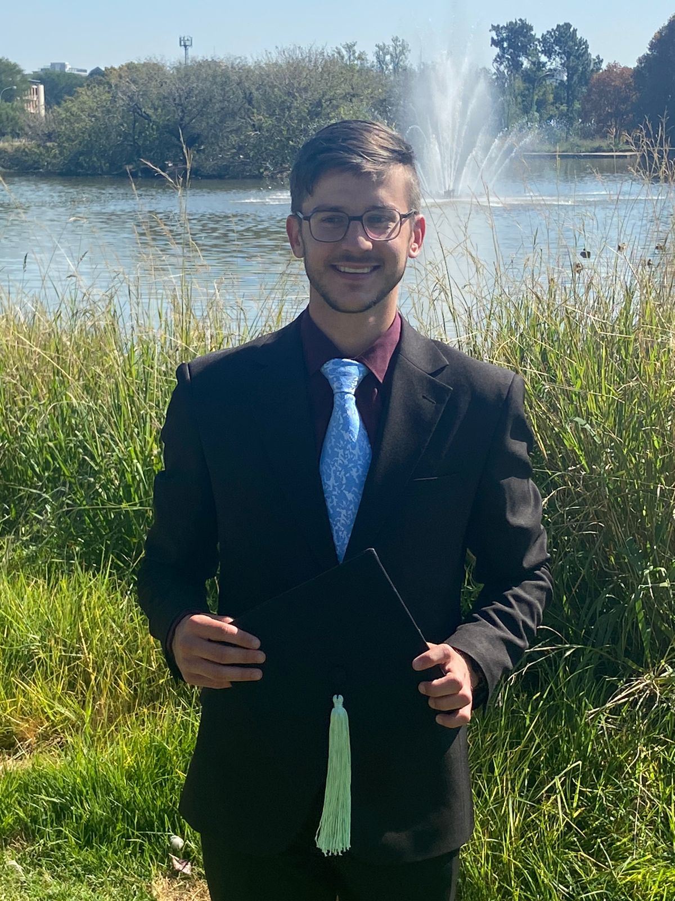

Anré Waters

Personal Statement
As a Computer Engineer, I am eager to leverage my expertise in
software development, electronic circuitry, and engineering to
address real-world challenges. My insatiable curiosity and
relentless pursuit of learning propel me to continually expand
my knowledge and refine my skills. I look forward to using my
skills along with technology to produce innovative and
exciting solutions.
Work Experience
- Alaris Antennas - Centurion, Gauteng (11/2022 - 01/2023)
Software Engineer Intern
I collaborated closely with the Software Engineer, where my
responsibilities included enhancing functionality within
components of a larger software project and managing smaller
coding tasks. Key responsibilities and accomplishments during
my internship at Alaris include:
- Coding and maintaining web-based applications using HTML, CSS, and JavaScript.
- Upgrading and programming an Excel-based quote application.
- Conducting testing of antennas and analysing resulting data.
- Participating in large-scale projects that necessitated collaboration with diverse teams of electronic engineers, software engineers, project managers, and production specialists.
- Demonstrating effective communication within teams through daily standup meetings and proactive requests for assistance when needed.
- Edenvale Bowling Club - Edenvale, Gauteng (06/2022 - Present)
Barmen and Volunteer
I help manage events related to bowling and serve as the bartender every Friday and during special functions. Key responsibilities and achievements in this role include:
- Coordinating volunteers and teams to ensure smooth operations during functions.
- Efficiently managing inventory, utilizing the point-of-sale system, and handling cash transactions.
- Demonstrating resilience and composure while working under pressure, particularly during peak hours.
- Engaging with customers in a friendly and professional manner, skilfully resolving conflicts when they arise.
- Maintaining clear communication with fellow bartenders to streamline order processing and enhance customer satisfaction.
- TeachMe2 - Pretoria, Gauteng (01/2019 - 04/2019)
Tutor
At TeachMe2, I served as a tutor for a grade 9 student, focusing on Mathematics and Natural Sciences. Key responsibilities and accomplishments during my tenure include:
- Tailoring teaching methods to simplify complex concepts and deepen understanding beyond the curriculum's scope.
- Providing instruction and translating materials into Afrikaans, the student's primary language of instruction, to facilitate learning and comprehension.
Education
- University of Pretoria - Pretoria, Gauteng (01/2018 - 02/2024)
Bachelor of Engineering - Computer Engineering.
- Jeppe High School for Boys - Johannesburg, Gauteng (01/2013 - 12/2017)
National Senior Certificate - Achieved with an 85% average and 8 distinctions.
Final Year Project
University of Pretoria - Pretoria, Gauteng (03/2023 - 02/2024)
Voice controlled chess set
Researched, designed, and implemented a voice-controlled digital chess set from scratch. Key aspects of the project included:
- Research: Identifying relevant academic papers and resources, synthesizing essential information, and acquiring proficiency in effective implementation.
- Speech recognition, with a focus on Hidden Markov Model (HMM)-based approaches.
- Designing and programming a chess engine.
- Python programming, code optimization, and integration for operation on an embedded system. The chess set was implemented on an Odroid M1.
Professional Skills
- Proficient in programming languages: Python, C, C++, Java.
- Excellent communication skills, adept at collaborating within project teams.
- Experienced in working with electronic circuitry and embedded systems.
Extra Curriculars and Awards
- House committee member for my residence in 2020 and the vice-chairperson for TuksChess in 2023.
- Represented South Africa at the 2017 Junior Commonwealth Chess championships held in India in the U20 age group.
- I am a member of Edenvale Bowling club. In bowls I have represented my district in the U25 team in 2023 and 2024.
Language Competencies
- English: Fluent
- Afrikaans: Native speaker
Contact Me